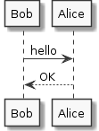

Github
Line highlighting
- Create Github Links to point to a block of code, e.x. $codeFileUrl#L17-24 to specify highlighting lines 17 to 24.
Git
Is it possible to do a sparse checkout without checking out the whole repository first
mkdir myrepo cd myrepo git init git config core.sparseCheckout true git remote add -f origin git://... echo path/to/subdir/*> .git/info/sparse-checkout git checkout [branchname]
Lighttable
Best file editor!
plugins
- gitlight - easy fit integration
- markdown - easy markdown editor with live view
- smart-ignore - ignore files or folders, gitignore like
Settings: user behaviors
{:+ {
;; The app tag is kind of like global scope. You assign behaviors that affect
;; all of Light Table here
:app [:lt.objs.sidebar.workspace/workspace.open-on-start
(:lt.objs.files/file.ignore-pattern "\\target/|pom.xml.versionsBackup|\\.git/|\\.swp")
(:lt.plugins.gitlight/config {:git-binary "git":max-history 64})
(:lt.objs.style/set-skin "dark")]
;; The editor tag is applied to all editors
:editor [:lt.objs.editor/no-wrap
:lt.objs.editor/line-numbers
:lt.objs.editor/highlight-current-line
:lt.objs.editor.file/remove-trailing-whitespace
(:lt.objs.style/set-theme "default")]
;; Here we can add behaviors to just clojure editors
:editor.clojure [(:lt.plugins.clojure/print-length 1000)]}
;; You can use the subtract key to remove behavior that may get added by
;; another diff
:- {:app []}}
Settings: user keymap
{:+ {:app {}
:editor {"alt-w" [:editor.watch.watch-selection]
"alt-shift-w" [:editor.watch.unwatch]
"alt-shift-s" [:gitlight-status-toggle]
"ctrl-d" [:editor.delete-line]
"ctrl-i" [:editor.select-all
:smart-indent-selection
:editor.selection.clear]
}
}
}
Apache Maven
Versioning
-
Change the version of of a project, if project is a parent or aggregator will change the version to all subsequent child project. sh mvn versions:set -DnewVersion=0.43-SNAPSHOT
Profiles
mvn help:active-profiles
PlantUML
A PlantUML sample diagram compiled and imported to the maven generation site.

Vagrant
Create Vagrant custom Boxes
http://www.skoblenick.com/vagrant/creating-a-custom-box-from-scratch/
guest additions plugin
In case u get this output:
Failed to mount folders in Linux guest. This is usually because the “vboxsf” file system is not available. Please verify that the guest additions are properly installed in the guest and can work properly. The command attempted was:
mount -t vboxsf -o uid=id -u vagrant,gid=getent group vagrant | cut -d: -f3 vagrant /vagrant mount -t vboxsf -o uid=id -u vagrant,gid=id -g vagrant vagrant /vagrant
The error output from the last command was:
stdin: is not a tty mount: unknown filesystem type ‘vboxsf’
Solution - vagrant plugin install vagrant-vbguest